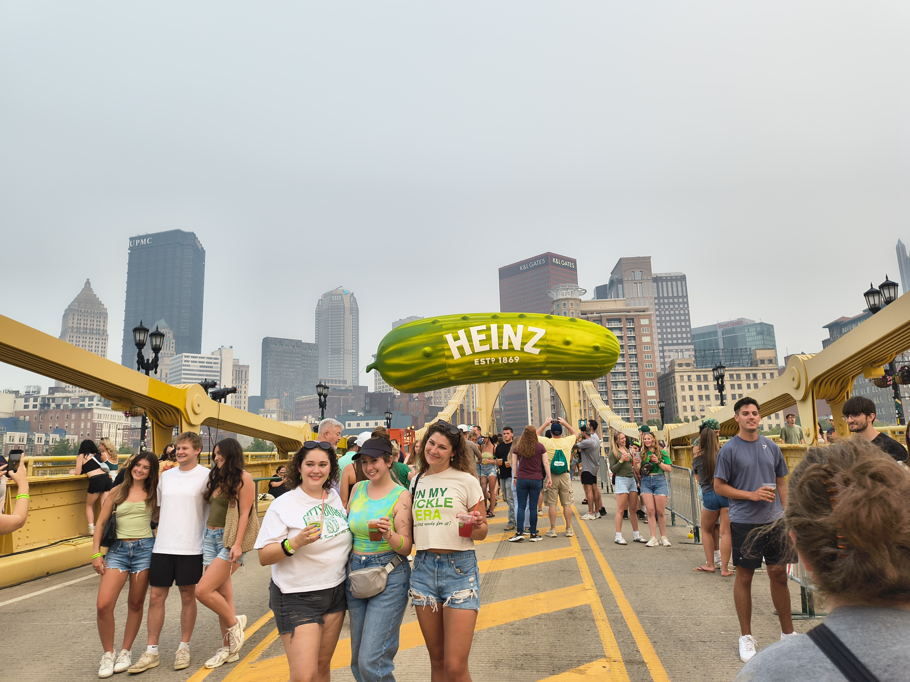
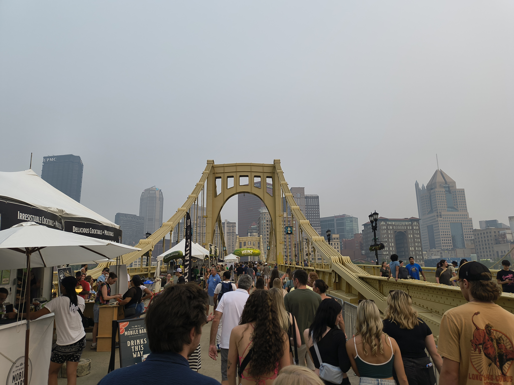
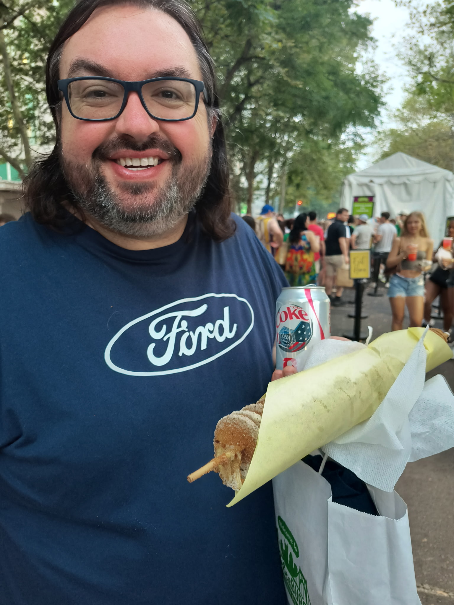
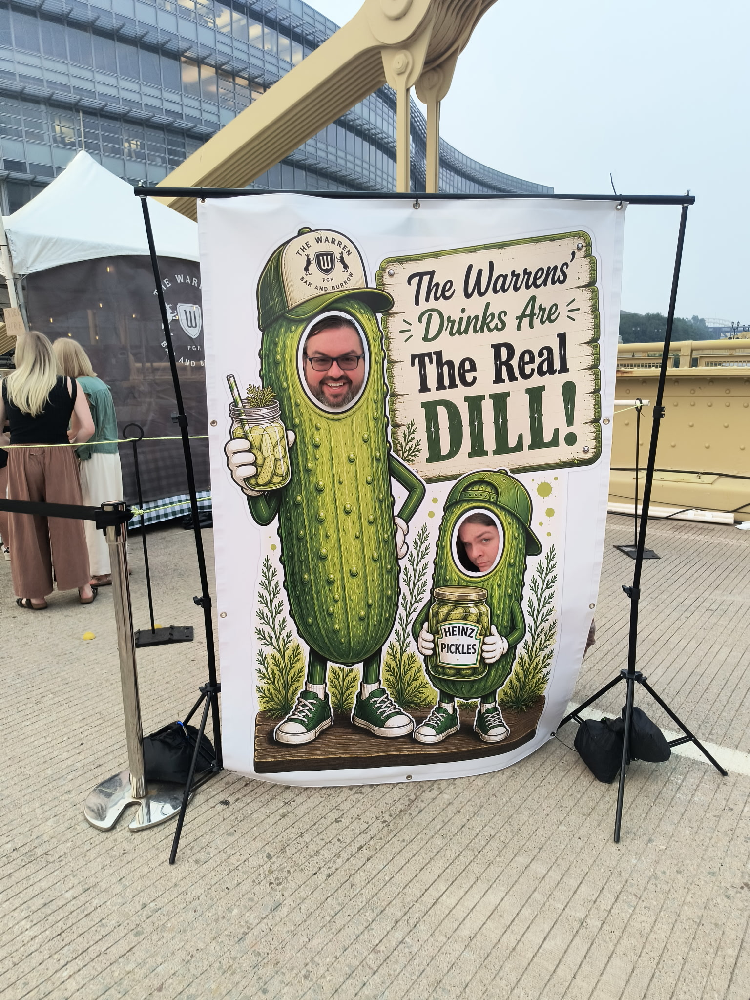

Captains Log

July 17th 2026
PICKELSBURGH!
Tonight is/was the night we went to Pickelsburgh! This is the first time I've been to it, and I'm not sure if the crowds were smaller because of the smoke in the air or if that was pretty typical, but I expected it to be busier than it was. I'm not complaining, don't get me wrong, I just thought it would be so packed it's hard to get around. There were some bottlenecks, such as at crossing walks and in front of some of the more popular booths. I think that's natural and mostly unavoidable, but overall it wasn't bad at all.
I know that this year they had it spread over both the Roberto Clamente bridge and the Andy Warhol bridge, as wella s market square, PPG square, and the new Art garden thing, which I don't know the name of yet. I can't say as this was my first one, but it was easily navigable.
As one would expect there was an endless assortment of pickles, and things pickle flavored. We tried a lot of them, and honestly I didn't have anything that I thought was terrible. I didn't try everything, so there is something to go back for next year. What we tried was:
| Food Tried | Rating | Thoughts |
|---|---|---|
| PickelFudge - Peanut Butter | 7/10 | I'm not a big fan of fudge to begin with, but this was suprisingly good |
| Southern Tier Pickel Beer | 10/10 | I'm a fan of Southern Tier to begin with, but this was suprisingly refreshing and amazing |
| Wild Bills Pickel Soda | 6/10 | We tried this after the pickel beer and maybe that was the problem, but it just wasn't as good |
| Pickel Perogies | 9.5/10 | The only thing I think would have put this over the top was some sour cream. It was amazing though! |
| Picklings | 5/10 | I wanted fried pickel chips with ranch. These were breaded with like a corn-dogish breading |
| Spiral Potato Spear | 10/10 | This came in different flavors, but we got sour cream and onion. Amazing! |
| Pickle Corn Dog | 6/10 | This gets a bonus point because it was completely novel. It was a hallowed out pickle with a hotdog in it, and then battered and fried. Not really for me. |
Of course you can also get just pickles, which of course I did! I got a large container of Horseradish pickels and two smaller containers one of Ranch pickles, and then Katie wanted Kosher pickles.




Halfday
I was invited on Tuesday morning to a meeting at work from 11AM to 5PM. For refernece I typically work from 6:45AM to 3PM with no lunch or breaks in between. I used to take a lunch but I found that I can have headphones on, and be eating food and someoen will still come up to me and ask me a question. Further if I go to the break room, they people who didn't even seek me out will then see me and ask me questions. Don't get me wrong, I like to help and don' thave a problem with the questions themselves, but I mean I'm trying to eat or take a break!
So on Wednesday I was at the office until 5:30PM after getting all the equipment I set up in that room to facilitate that meeting. It wasn't a ton, but I had chargers, and a power strip as well as my own chair for the duration. Whene everyone else ran out, I had to gather those things up and take them out. I've also found as I get older that if something needs to be done, in this case wrapping up the cables for the chargers and the surge protector, it's best to do them right away. Otherwise I end up setting them aside and never circling back to them.
I also had a meeting after hourse on Tuesday to discuss a trip to Reno, that I didn't want to do. On of my sites in Reno is getting an AP (Access Point for the Wi-Fi) refreshed. Their units are out of warranty and end of life, but a nother DC (Distribution Center) closed so they took theirs at no cost. The networking team is working with a vendor to decide what and where each AP is going, and they are configuring them on the back end. I have asked them since we started discussing this project to let me know if/when I need to go.
Continiously they, the networking team, have been telling me they don't need me out there. There is limited work and help I can provide as it's not something local IT can do. We need a scissor lift to pull them down and network runs in some cases, which also require a scissor lift. I will go if necessary and if I think I can provide some assistance, but both the networking team and I do not see a point.
The IT Director though wanted to know why I wasn't going and was pushing me to go. We didn't have a firm install date for this until Monday, so to tell me Tuesday afternoon I have to fly out of Pittsburgh on Thursday, work all weekend, and the following week, and then fly back when I can't provide any value was just mind boggling to me. I had to have a meeting with the networking team manager to clarify this and ensure we were both on the same page about it.
We are. All this to say I had 4 hours of overtime this week. We are all salary so I took a half day today to recoup my time